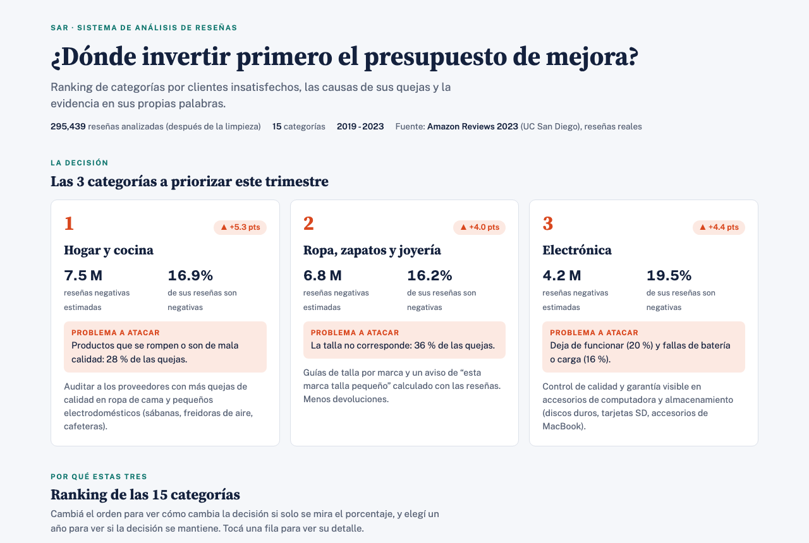

De 300,000 reseñas a una decisión: qué categorías priorizar y qué problema atacar en cada una.
Luis Pedro González
Gerente de experiencia del cliente de una tienda en línea grande: decide el presupuesto de mejora por categoría y atiende ~10,000 mensajes de clientes al mes.
Por qué NLPHay millones de reseñas y nadie puede leerlas a mano. La causa de cada queja está escrita en el texto.
¿A qué 3 categorías les asigno primero el presupuesto de mejora, y qué problema ataco en cada una?
Reseñas reales de Amazon
Normalizar y etiquetar
TF-IDF + clasificador
Prioridad y causas
Dashboard web
Muestreo aleatorio por rangos de bytes de 15 archivos originales, respetando el límite de la API. Sin CSV de Kaggle.
Gravedad (% de quejas) × alcance (volumen real estimado con los totales oficiales).
Entropía cruzada ponderada por clase: una queja o una neutra pesan más que una reseña positiva.
Función de valor con fuentes, curva de valor y sensibilidad ±20 % y ±50 %.
Prueba de que el modelo sirve en canales que no traen etiqueta: correos, chats, redes.
El modelo se exporta a la página: sin servidor de inferencia, costo US$ 0 y el texto del cliente no sale de la computadora.
McAuley Lab, UC San Diego (Hou et al., 2024). Cada reseña trae estrellas, título, texto, producto, fecha, votos de "útil" y si la compra fue verificada. Los datos están en inglés; todo el análisis está en español.
La forma de "J" típica de las reseñas en línea: dos de cada tres clientes dan 5★ y casi 1 de cada 5 deja una queja (1-2★).
Minúsculas, sin HTML ni números, "don't" → "do not", stopwords sin quitar negaciones
50,000 términos, palabras y pares de palabras, tf sublineal, min_df 5
Regresión Logística multinomial: P(negativa), P(neutra), P(positiva)
| Modelo (prueba, 44,316) | Accuracy | F1 macro | F1 quejas |
|---|---|---|---|
| Línea base (siempre "positiva") | 0.75 | 0.29 | 0.00 |
| Naive Bayes (α = 0.1) | 0.88 | 0.63 | 0.78 |
| Regresión Logística (C = 1) ✓ | 0.85 | 0.69 | 0.78 |
Entropía cruzada ponderada por clase (1 / frecuencia): una neutra pesa 5.0, una queja 1.9 y una positiva 0.4. Sin eso, el modelo ignora las clases chicas. Más regularización L2 (C = 1).
C ∈ {0.25, 0.5, 1, 2} y α ∈ {0.1, 0.3, 1} elegidos en validación por F1 macro. Datos 70 / 15 / 15; la prueba se usa una sola vez.
Decir siempre "positiva" acierta el 75 % y no detecta ninguna queja. Naive Bayes casi nunca predice "neutra" (F1 0.17).
"disappointed" empuja hacia negativa, pero "not disappointed" es de los términos más positivos. Si "not" fuera stopword, el modelo leería esas reseñas al revés.
Contar palabras negativas (bad, broke, waste…) y positivas (great, love…).
La regla no entiende contexto: en "not bad" ve dos palabras negativas.
Quejas estimadas en las 15 categorías leyendo solo el texto, como en correos o redes.
F1 macro según cuántas reseñas se usan para entrenar.
De 100 mil a 200 mil reseñas mejora solo 0.005: ya llegó a su techo.
Hogar y cocina está en el puesto 11 por porcentaje, pero tiene 19 veces más reseñas negativas que Videojuegos.
Prioridad = gravedad (%) × alcance (volumen).
Cada categoría tiene entre 3,200 y 5,400 reseñas por año: margen de error de ±1.1 puntos. Las subidas (de 13.7% a 19.5% en Hogar y cocina) son mucho mayores que el margen.
Juntas concentran 18.5 millones de reseñas negativas: el 45% de todas las quejas de las 15 categorías. Empeoraron entre 4 y 5 puntos desde 2019.
Si el modelo marca un mensaje como queja, un agente contacta al cliente y le ofrece un cupón. ¿Cuándo conviene actuar?
| Resultado | Qué pasa | Valor |
|---|---|---|
| Verdadero positivo | Se recupera al cliente con cierta probabilidad | B − C |
| Falso positivo | Cupón y tiempo gastados en un cliente contento | − C |
| Falso negativo / verdadero negativo | Igual que sin el sistema | 0 |
| Supuesto | Valor | Fuente |
|---|---|---|
| Gasto anual del cliente | US$ 570 | CIRP 2024 (cliente sin Prime; con Prime, US$ 1,170) |
| Margen | 25 % | Supuesto conservador |
| Recuperación por contactar | +20 pts | Kotler: 54-70 % de quienes se quejan vuelven si se resuelve |
| Cupón | US$ 10 | Supuesto |
| Tiempo del agente | 10 min | Supuesto |
| Salario del agente | US$ 20.59/h | BLS, mayo 2024 (mediana EE. UU.) |
Ahora les muestro cómo se ve y cómo funciona SAR con los datos reales.

El texto dice qué arreglar. El volumen dice dónde. Y con el umbral elegido por valor, el modelo convierte cada 10,000 mensajes al mes en ~US$ 194,000 al año recuperados.